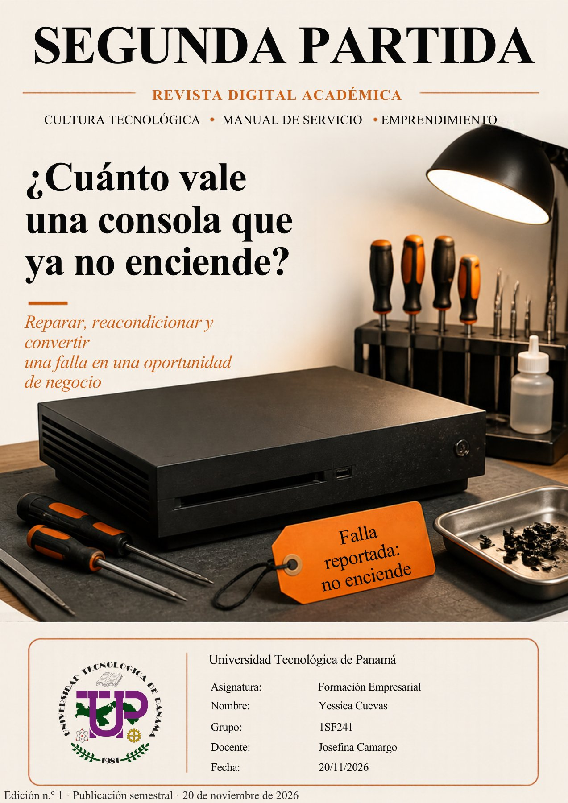

<!doctype html>
<html lang="es"><meta charset="utf-8"><meta name="viewport" content="width=device-width,initial-scale=1"><title>Segunda Partida · Revista digital</title>
<style>
*{box-sizing:border-box}body{margin:0;background:#191916;color:#fff;font:1rem system-ui,sans-serif}header,nav{display:flex;align-items:center;justify-content:space-between;gap:1rem;padding:.75rem max(4vw,14px)}header{border-bottom:1px solid #555}h1{font: bold 1.3rem Georgia,serif;margin:0}a{color:#ffbd82}main{display:grid;place-items:center;padding:12px;perspective:1200px}img{display:block;max-width:100%;height:auto;max-height:calc(100dvh - 145px);box-shadow:0 8px 28px #0008;touch-action:pan-y pinch-zoom}nav{justify-content:center}button{font:inherit;padding:.5rem .85rem;border:0;border-radius:4px;background:#ffd0a8;color:#221a12;cursor:pointer}button:disabled{opacity:.35}output{white-space:nowrap}
</style>
<header><h1>Segunda Partida</h1><a href="revista.pdf">Abrir PDF</a></header>
<main></main>
<nav aria-label="Navegación de la revista"><button id="anterior" disabled>← Anterior</button><output id="contador" aria-live="polite">1 / 8</output><button id="siguiente">Siguiente →</button></nav>
<script>
const imagen = document.querySelector('#hoja');
const anterior = document.querySelector('#anterior');
const siguiente = document.querySelector('#siguiente');
const contador = document.querySelector('#contador');
let pagina = 1;
function pasar(direccion) {
  const destino = pagina + direccion;
  if (destino < 1 || destino > 8) return;
  pagina = destino;
  imagen.src = 'pagina-' + pagina + '.jpg';
  imagen.alt = 'Segunda Partida, página ' + pagina;
  contador.textContent = pagina + ' / 8';
  anterior.disabled = pagina === 1;
  siguiente.disabled = pagina === 8;
  if (!matchMedia('(prefers-reduced-motion: reduce)').matches) {
    imagen.style.transformOrigin = direccion > 0 ? 'left center' : 'right center';
    imagen.animate([{transform:'rotateY(' + (direccion * 78) + 'deg)',filter:'brightness(.65)'},{transform:'rotateY(0deg)',filter:'brightness(1)'}],{duration:360,easing:'ease-out'});
  }
}
anterior.onclick = () => pasar(-1);
siguiente.onclick = () => pasar(1);
document.addEventListener('keydown', evento => {
  if (evento.key === 'ArrowRight') pasar(1);
  if (evento.key === 'ArrowLeft') pasar(-1);
});
let inicio;
imagen.addEventListener('touchstart', evento => {
  inicio = evento.touches.length === 1 ? evento.touches[0].clientX : undefined;
}, {passive:true});
imagen.addEventListener('touchend', evento => {
  const distancia = evento.changedTouches[0].clientX - inicio;
  if (Math.abs(distancia) > 50) pasar(distancia < 0 ? 1 : -1);
  inicio = undefined;
}, {passive:true});
</script></html>
